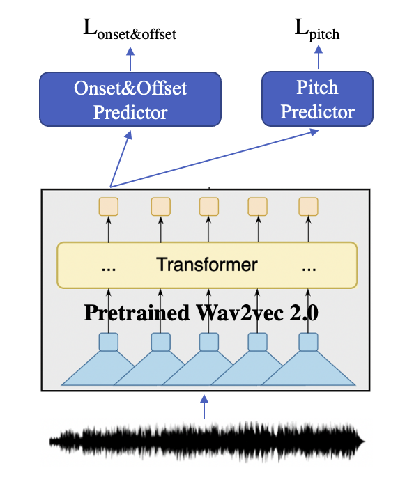

Yao Qiu, Jinchao Zhang, Yong Shan, Jie Zhou
WeChat AI
Note-level automatic singing transcription is a task that aims to automatically estimate the sequence of song notes from a music recording that contains a singer's voice. Recently, the introduction of deep learning methods has led to significant performance improvements. However, the development of these models suffer from limited training data, because annotation of the sing transcription dataset requires a high level of musical proficiency and is very labor-intensive. In order to solve the problem of data shortage, we replaced the feature extractor (such as mel-spectrogram) with a wav2vec model which is pretrained on a large scale speech data, transfering the pretrained speech knowledge to the sing transcription task. Experiments showed that our proposed method significantly outperforms the SOTA method.
Our model takes audio data as input and uses wav2vec 2.0 to get its contextual representation. Each token represents a frame (about 20ms). The Onset&Offset Predictor predicts whether the corresponding time of each token is the start/end position of one note, and the Pitch Predictor predicts the pitch at that time.
